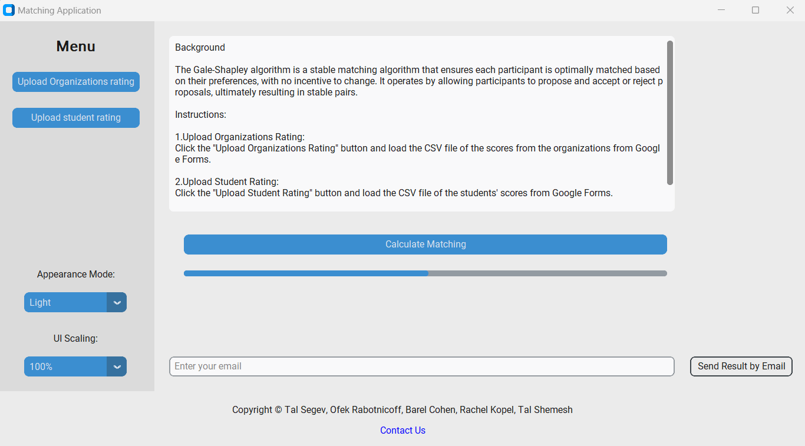

Explore the dynamic world of our Retail Sports Shop through the lens of insightful data visualization. Leveraging the power of Power BI, I've crafted an interactive dashboard that provides a comprehensive overview of key metrics, sales trends, and performance indicators. Dive into a visually compelling representation of our retail landscape, where Power BI transforms raw data into actionable insights, empowering informed decision-making for a thriving sports retail experience
Welcome to the War Alarm Data Dashboard, a powerful tool designed to provide real-time insights into alarm patterns since the beginning of the war on 07.10. Leveraging the capabilities of Power BI and connecting seamlessly to a dynamic dataset through an API, this dashboard is engineered to monitor and analyze critical aspects of alarm data.
The dashboard connects in real-time to a comprehensive dataset via an API, ensuring that the information presented is up-to-date and reflective of the evolving situation since the onset of the war on 07.10.
Working together with team partner @TalSegev

Our project addresses the challenge of subjective student placement at "Azrieli - Academic College of Engineering" by introducing the Gail-Shepley stable matching algorithm. Traditional methods, based on intuition, led to compatibility issues and high dropout rates. Our system, developed in collaboration with stakeholders, offers a user-friendly platform, continuously analyzing metrics data for algorithmic improvements. Key indicators, the Dropout Risk Index (DRI) and Placement Satisfaction Index (SPI), predict student success and organizational assimilation. Future plans involve combining the algorithm with additional optimization techniques for broader applications in fields like marriage, foster care, and medicine. In essence, our project pioneers a sophisticated technological solution, promising significant improvements in matching and placement processes, with the potential for widespread positive impact.
In this database project for a community center, I undertook the comprehensive task of characterizing data, constructing a relational database, and formulating essential business queries. Through meticulous data analysis, I identified key entities and relationships, laying the foundation for an optimized and normalized database schema. The subsequent formulation and execution of diverse business queries provided valuable insights into enrollment trends, teacher performance, and statistical analyses. The project culminated in a detailed presentation summarizing the entire lifecycle, showcasing my proficiency in practical database design and the application of data-driven insights for informed decision-making. Overall, this project successfully addressed the community center's data management needs, offering streamlined solutions and actionable information.